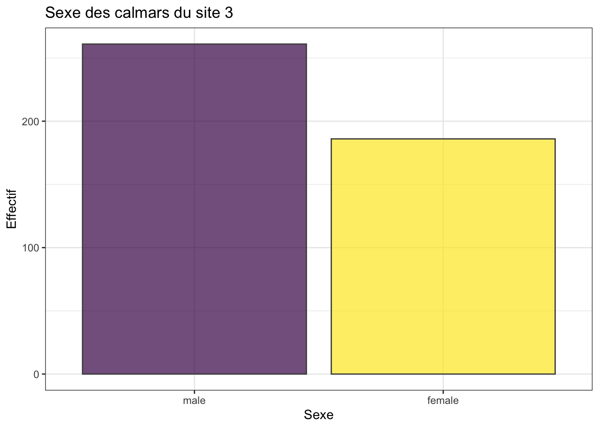
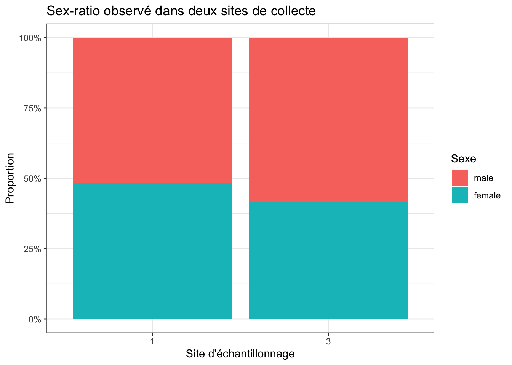
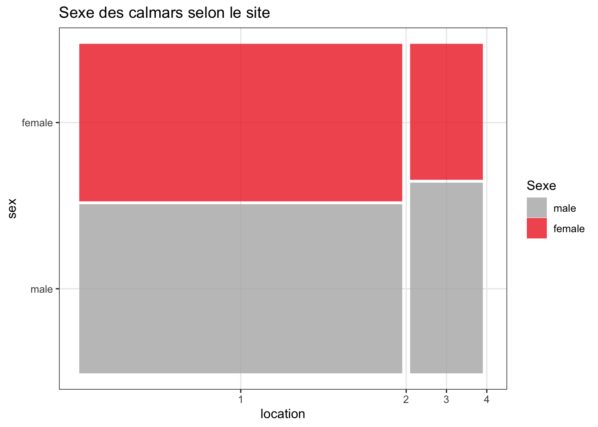
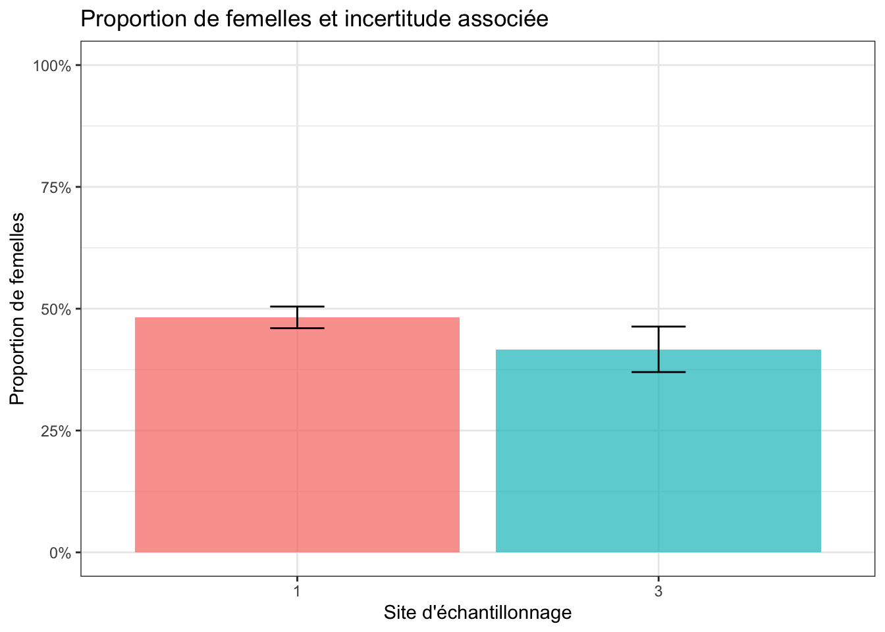

library(tidyverse)
library(skimr)
library(binom)
library(ggmosaic)
library(janitor)15.1 Pré-requis
Comme pour chaque nouveau chapitre, je vous conseille de démarrer une nouvelle session de travail (Menu Session > Restart R), et de créer un nouveau script que vous placerez dans votre répertoire de travail. Inutile en revanche de créer un nouveau Rproject : vous pouvez tout à fait avoir plusieurs scripts dans le même répertoire de travail et pour un même Rproject. Comme toujours, consultez les chapitres précédents (en particulier les sections 1.3.2 et 1.3.3) si vous ne savez plus comment faire.
Si vous êtes dans une nouvelle session de travail (ou que vous avez quitté puis relancé RStudio), vous devrez penser à recharger en mémoire les packages utiles. Dans ce chapitre, vous aurez besoin d’utiliser :
- le
tidyverse(Wickham 2023), qui comprend notammentreadr(Wickham, Hester, et Bryan 2026),dplyr(Wickham, François, et al. 2026),tidyr(Wickham, Vaughan, et Girlich 2025) etggplot2(Wickham, Chang, et al. 2026). skimr(Waring et al. 2026), qui permet de calculer des résumés de données très informatifs.binom(Dorai-Raj et Cascone 2026), qui permet de calculer plusieurs types d’intervalles de confiance pour une proportion.ggmosaic(Jeppson, Hofmann, et Cook 2026), pour réaliser des graphiques en mosaïque avec la syntaxe deggplot2.janitor(Firke 2024), pour nettoyer facilement les noms de variables d’un tableau.
Attention
Si certains packages ne sont pas encore installés sur votre ordinateur (par exemple, binom et ggmosaic), vous devrez les installer avant de pouvoir les charger. Consultez la Section 1.6 pour savoir comment faire.
Vous aurez également besoin du jeu de données suivant que vous pouvez dès maintenant télécharger dans votre répertoire de travail :
Enfin, je spécifie ici une fois pour toutes le thème que j’utiliserai pour tous les graphiques de ce chapitre. Libre à vous de choisir un thème différent ou de vous contenter du thème proposé par défaut :
theme_set(theme_bw())15.2 Contexte
Jusqu’à présent, nous avons surtout comparé des moyennes. Pourtant, dans de très nombreuses études en biologie, en écologie, en médecine ou en agronomie, la variable mesurée n’est pas numérique continue, mais binaire :
- un individu est infecté ou non ;
- une graine germe ou ne germe pas ;
- un nid réussit ou échoue ;
- un animal est mâle ou femelle.
Dans ce type de situation, ce n’est plus la moyenne d’une grandeur continue que l’on cherche à comparer, mais une proportion. Les questions posées sont alors du type :
- la proportion de femelles dans une population diffère-t-elle de 50 % ?
- la proportion d’individus infectés est-elle la même dans deux groupes ?
- le succès de germination est-il identique dans deux traitements ?
Le cas le plus simple est celui d’une variable binaire observée sur chaque individu. Mais bientôt, des problèmes plus complexes pourront aussi être décrits sous la forme de tables de contingence, car les données issues de comptages sont souvent regroupées et ne sont pas toujours limitées à deux catégories. Les questions que nous abordons ici pourront donc être étendues aux facteurs possédant un nombre quelconque de modalités, et pas seulement deux. Dans l’immédiat, il faut donc comprendre à la fois :
- comment passer des données brutes individuelles aux effectifs utiles pour les tests ;
- comment distinguer l’estimation d’une proportion du test d’une hypothèse ;
- comment choisir entre les principaux tests disponibles.
Dans ce chapitre, nous allons voir successivement :
- pourquoi une proportion est une moyenne ;
- comment estimer une proportion et son incertitude ;
- comment comparer une proportion observée à une valeur théorique ;
- comment comparer deux proportions dans deux groupes indépendants ;
- comment relier ces comparaisons aux tables de contingence ;
- quand utiliser un test exact plutôt qu’une approximation.
15.3 Importation et mise en forme des données
Nous allons travailler ici sur le fichier squid.txt, qui contient des données sur des calmars échantillonnés dans plusieurs sites. Les variables disponibles sont :
Sample: identifiant de l’observation ;YearetMonth: date de collecte ;Location: site d’échantillonnage ;Sex: sexe de l’individu ;GSI: gonado-somatic index (ou Indice Gonado-Somatique : c’est un rapport qui rend compte de la masse des gonades par rapport à la masse de l’individu et qui renseigne notamment sur le statut reproducteur des individus, leur maturité sexuelle, etc. Ici, il est exprimé en pourcents).
Ici, nous n’utiliserons dans un premier temps que les variables Location et Sex, car ce chapitre est consacré aux proportions. Importez les données dans un objet nommé squid_raw (si vous ne savez plus comment faire, consultez la Section 4.4) puis examinez le tableau obtenu :
squid_raw# A tibble: 2,644 × 6
Sample Year Month Location Sex GSI
<dbl> <dbl> <dbl> <dbl> <dbl> <dbl>
1 1 1 1 1 2 10.4
2 2 1 1 3 2 9.83
3 3 1 1 1 2 9.74
4 4 1 1 1 2 9.31
5 5 1 1 1 2 8.99
6 6 1 1 1 2 8.77
7 7 1 1 1 2 8.26
8 8 1 1 3 2 7.40
9 9 1 1 3 2 7.22
10 10 1 2 1 2 6.84
# ℹ 2,634 more rowsComme dans d’autres chapitres du livre, il est utile d’harmoniser ou de simplifier les intitulés des colonnes dès l’importation (par exemple, pour supprimer les majuscules ou les caractères spéciaux). Le package janitor permet de faire cela très facilement avec la fonction clean_names() :
squid_raw <- squid_raw |>
clean_names()
names(squid_raw)[1] "sample" "year" "month" "location" "sex" "gsi" Les sexes sont ici codés 1 et 2. Pour rendre le tableau plus lisible, nous allons transformer cette variable en facteur, et créer une variable logique female qui vaudra TRUE pour les femelles et FALSE pour les mâles :
squid <- squid_raw |>
mutate(
location = factor(location),
sex = factor(sex, labels = c("male", "female")),
female = sex == "female"
)
squid# A tibble: 2,644 × 7
sample year month location sex gsi female
<dbl> <dbl> <dbl> <fct> <fct> <dbl> <lgl>
1 1 1 1 1 female 10.4 TRUE
2 2 1 1 3 female 9.83 TRUE
3 3 1 1 1 female 9.74 TRUE
4 4 1 1 1 female 9.31 TRUE
5 5 1 1 1 female 8.99 TRUE
6 6 1 1 1 female 8.77 TRUE
7 7 1 1 1 female 8.26 TRUE
8 8 1 1 3 female 7.40 TRUE
9 9 1 1 3 female 7.22 TRUE
10 10 1 2 1 female 6.84 TRUE
# ℹ 2,634 more rowsNous disposons maintenant d’un tableau rangé, au format long :
- chaque ligne correspond à un individu ;
locationetsexsont des variables qualitatives ;femaleest une variable logique qui code le sexe de façon binaire.
C’est ce type de tableau qui doit toujours constituer votre point de départ. Les tests sur proportions utilisent ensuite des effectifs agrégés, mais ces effectifs doivent être obtenus à partir de données individuelles correctement structurées.
15.4 Une proportion est une moyenne
Avant même de parler de test statistique, il faut bien comprendre qu’une proportion est tout simplement la moyenne d’une variable codée TRUE / FALSE ou 1 / 0.
Prenons un premier exemple avec les calmars du site 3 :
squid_3 <- squid |>
filter(location == "3")
squid_3# A tibble: 447 × 7
sample year month location sex gsi female
<dbl> <dbl> <dbl> <fct> <fct> <dbl> <lgl>
1 2 1 1 3 female 9.83 TRUE
2 8 1 1 3 female 7.40 TRUE
3 9 1 1 3 female 7.22 TRUE
4 17 1 6 3 female 5.78 TRUE
5 19 1 5 3 female 5.65 TRUE
6 21 1 5 3 female 5.60 TRUE
7 40 1 6 3 female 4.66 TRUE
8 45 1 5 3 female 4.49 TRUE
9 48 1 5 3 male 4.30 FALSE
10 56 1 5 3 female 3.91 TRUE
# ℹ 437 more rowsLe nombre de femelles et de mâles s’obtient facilement :
squid_3 |>
count(sex)# A tibble: 2 × 2
sex n
<fct> <int>
1 male 261
2 female 186On peut également demander un résumé rapide du tableau :
skim(squid_3)── Data Summary ────────────────────────
Values
Name squid_3
Number of rows 447
Number of columns 7
_______________________
Column type frequency:
factor 2
logical 1
numeric 4
________________________
Group variables None
── Variable type: factor ───────────────────────────────────────────────────────
skim_variable n_missing complete_rate ordered n_unique
1 location 0 1 FALSE 1
2 sex 0 1 FALSE 2
top_counts
1 3: 447, 1: 0, 2: 0, 4: 0
2 mal: 261, fem: 186
── Variable type: logical ──────────────────────────────────────────────────────
skim_variable n_missing complete_rate mean count
1 female 0 1 0.416 FAL: 261, TRU: 186
── Variable type: numeric ──────────────────────────────────────────────────────
skim_variable n_missing complete_rate mean sd p0 p25 p50
1 sample 0 1 819. 526. 2 352. 809
2 year 0 1 1.75 0.676 1 1 2
3 month 0 1 5.00 2.20 1 4 5
4 gsi 0 1 2.06 2.16 0.0157 0.288 1.44
p75 p100 hist
1 1145 2468 ▇▇▆▂▁
2 2 4 ▆▇▁▂▁
3 7 12 ▅▇▇▁▁
4 2.40 9.83 ▇▂▁▁▁La proportion de femelles s’obtient alors en calculant la moyenne de la variable logique female :
squid_3 |>
summarise(proportion_femelles = mean(female))# A tibble: 1 × 1
proportion_femelles
<dbl>
1 0.416Et si l’on préfère, on peut présenter le résultat en pourcentage :
squid_3 |>
summarise(pourcentage_femelles = 100 * mean(female))# A tibble: 1 × 1
pourcentage_femelles
<dbl>
1 41.6Autrement dit, quand on code une variable binaire par TRUE et FALSE, calculer la moyenne revient à calculer la proportion de TRUE. C’est une idée essentielle, car elle permet de faire le lien entre les chapitres précédents consacrés aux moyennes et ce nouveau chapitre consacré aux proportions.
Dernière chose, il est aussi possible de calculer les proportions de femelles et de mâles à partir du comptage des effectifs grâce aux fonctions count() et mutate() :
squid_3 |>
count(sex) |>
mutate(proportion = n / sum(n))# A tibble: 2 × 3
sex n proportion
<fct> <int> <dbl>
1 male 261 0.584
2 female 186 0.41615.5 Estimer une proportion et son incertitude
Comme pour une moyenne, une proportion observée dans un échantillon n’est qu’une estimation de la proportion réelle dans la population générale. Il faut donc s’intéresser à son incertitude.
Ici, nous allons estimer la proportion de femelles parmi les calmars échantillonnés au site 3 à l’aide de la fonction binom.test(). Cette fonction réalise un test binomial exact, mais elle fournit aussi l’intervalle de confiance de la proportion observée :
binom.test(
x = sum(squid_3$female),
n = nrow(squid_3)
)
Exact binomial test
data: sum(squid_3$female) and nrow(squid_3)
number of successes = 186, number of trials = 447, p-value = 0.0004523
alternative hypothesis: true probability of success is not equal to 0.5
95 percent confidence interval:
0.3699820 0.4633504
sample estimates:
probability of success
0.4161074 Plusieurs éléments nous intéressent :
number of successescorrespond ici au nombre de femelles observées ;number of trialscorrespond au nombre total de calmars échantillonnés au site3;sample estimatesdonne la proportion observée ;95 percent confidence intervalfournit un intervalle de confiance à 95 % pour cette proportion.
La proportion observée de femelles vaut donc 0.416, soit environ 41.6 %. Cet intervalle de confiance nous indique quelles sont les valeurs plausibles de la proportion de femelles dans la population générale, compte tenu de notre échantillon. Ici, dans la population générale, la proportion de femelles a de bonnes chances d’être comprise entre 37 % et 46.3 %.
La méthode utilisée ici est la méthode exacte (on parle aussi souvent d’intervalle exact binomial, ou intervalle de Clopper-Pearson). Elle n’est toutefois pas la seule possible. Le package binom permet de calculer facilement l’intervalle de confiance d’une proportion selon plusieurs méthodes de calcul :
binom.confint(
x = sum(squid_3$female),
n = nrow(squid_3)
) method x n mean lower upper
1 agresti-coull 186 447 0.4161074 0.3713117 0.4623328
2 asymptotic 186 447 0.4161074 0.3704129 0.4618018
3 bayes 186 447 0.4162946 0.3708289 0.4619696
4 cloglog 186 447 0.4161074 0.3701677 0.4613510
5 exact 186 447 0.4161074 0.3699820 0.4633504
6 logit 186 447 0.4161074 0.3712528 0.4623958
7 probit 186 447 0.4161074 0.3710776 0.4622673
8 profile 186 447 0.4161074 0.3709891 0.4621846
9 lrt 186 447 0.4161074 0.3710090 0.4621738
10 prop.test 186 447 0.4161074 0.3702257 0.4634535
11 wilson 186 447 0.4161074 0.3713172 0.4623272La méthode exact correspond à celle que nous retrouvons dans les résultats de binom.test(). Les chiffres fournis sont donc strictement identiques à ceux fournis par binom.test(). En général, c’est la méthode recommandée. Toutefois, la méthode ac (pour méthode d’Agresti-Coull) peut être utile car c’est l’une des rares méthodes de la liste qui permet un calcul des bornes de l’intervalle de confiance à 95% à la main.
L’intervalle d’Agresti-Coull à 95 % peut être calculé de façon approchée en ajoutant 2 succès et 2 échecs. Si x est le nombre de succès observés et n la taille de l’échantillon, on calcule d’abord :
\[\tilde{p} = \frac{x + 2}{n + 4}\]
Puis l’erreur standard associée à cette proportion ajustée :
\[SE_{\tilde{p}} = \sqrt{\frac{\tilde{p}(1-\tilde{p})}{n+4}}\]
Enfin, l’intervalle de confiance à 95 % est approximativement :
\[\tilde{p} \pm 1.96 \times SE_{\tilde{p}}\]
Voyons ce que cela donne pour nos calmars du site 3 :
x <- sum(squid_3$female)
n <- nrow(squid_3)
p_tilde <- (x + 2) / (n + 4)
se_tilde <- sqrt(p_tilde * (1 - p_tilde) / (n + 4))
tibble(
p_tilde = p_tilde,
IC95_inf = p_tilde - 1.96 * se_tilde,
IC95_sup = p_tilde + 1.96 * se_tilde
)# A tibble: 1 × 3
p_tilde IC95_inf IC95_sup
<dbl> <dbl> <dbl>
1 0.417 0.371 0.462On retrouve des valeurs très proches de celles renvoyées par binom.confint(..., methods = "ac"). Autrement dit :
binom.test()fournit ici un intervalle exact ;binom.confint(methods = "exact")retrouve ce même intervalle ;binom.confint(methods = "ac")donne l’intervalle d’Agresti-Coull ;- et cet intervalle d’Agresti-Coull peut être approximativement recalculé à la main à partir de la formule ci-dessus.
Estimer n’est pas tester
Il faut bien distinguer deux opérations intellectuelles différentes :
- estimer une proportion, c’est chercher quelle valeur du paramètre est plausible dans la population générale ;
- tester une proportion, c’est chercher si une hypothèse précise sur ce paramètre peut être rejetée ou non.
L’estimation répond à la question “combien ?”.
Le test répond à la question “compatible avec quoi ?”.
Cette dernière remarque est très importante et elle aurait pu être faite dans les chapitres précédents consacrés aux moyennes. Il ne faut jamais confondre l’estimation d’une grandeur (moyenne, proportion, etc.) avec le test d’une hypothèse à son sujet. L’estimation doit toujours précéder le test, et elle doit être examinée attentivement avant de se lancer dans le test. Si un test rejette l’hypothèse nulle, cela ne nous dit absolument rien sur la valeur réelle du paramètre dans la population générale. De même, si un test ne rejette pas l’hypothèse nulle, cela ne signifie pas que l’hypothèse nulle est vraie. C’est pour cela que les estimations et leurs intervalles de confiance sont tout aussi importants que les p-values. Et c’est la raison pour laquelle pour la plupart des fonctions de test dans R, renvoient à la fois les résultats du test, les estimations et les intervalles de confiances pertinents pour l’interprétation des résultats.
15.6 Exploration graphique
Avant de faire un test, il est utile de visualiser les effectifs observés :
squid_3 |>
ggplot(aes(x = sex, fill = sex)) +
geom_bar(show.legend = FALSE, alpha = 0.7, color = "grey30") +
labs(x = "Sexe", y = "Effectif", title = "Sexe des calmars du site 3") +
scale_fill_viridis_d()
Ce graphique permet de voir immédiatement si l’on observe un déséquilibre marqué ou non entre les deux sexes. Mais un déséquilibre visuel ne suffit jamais à lui seul : il faut encore déterminer s’il peut être attribué au simple hasard de l’échantillonnage.
15.7 Comparer une proportion à une valeur théorique
Supposons maintenant que l’hypothèse théorique soit celle d’un sex-ratio équilibré, c’est-à-dire 50 % de femelles et 50 % de mâles. Nous voulons donc savoir si la proportion observée de femelles au site 3 est compatible avec cette hypothèse.
Les hypothèses testées sont les suivantes :
- H\(_0\) : la proportion de femelles dans la population vaut 0.5.
- H\(_1\) : la proportion de femelles dans la population est différente de 0.5.
Le test adapté est le test binomial exact :
test_site3 <- binom.test(
x = sum(squid_3$female),
n = nrow(squid_3),
p = 0.5
)
test_site3
Exact binomial test
data: sum(squid_3$female) and nrow(squid_3)
number of successes = 186, number of trials = 447, p-value = 0.0004523
alternative hypothesis: true probability of success is not equal to 0.5
95 percent confidence interval:
0.3699820 0.4633504
sample estimates:
probability of success
0.4161074 La p-value de ce test nous permet de décider si l’écart observé à 50 % est trop grand pour être attribué au seul hasard de l’échantillonnage.
Le point important ici est le suivant : nous avons bien affaire à un échantillon unique, pour lequel nous comparons une proportion observée à une valeur théorique. C’est exactement la situation dans laquelle il faut penser à binom.test().
15.7.1 Test unilatéral
Dans certains cas, l’hypothèse de recherche n’est pas “différente de”, mais “supérieure à” ou “inférieure à”. On peut alors réaliser un test unilatéral.
Par exemple, si nous avions de bonnes raisons biologiques de penser qu’au site 3 les femelles sont moins fréquentes que les mâles, nous pourrions formuler les hypothèses suivantes :
- H\(_0\) : la proportion de femelles vaut 0.5.
- H\(_1\) : la proportion de femelles est inférieure à 0.5.
Le code devient :
binom.test(
x = sum(squid_3$female),
n = nrow(squid_3),
p = 0.5,
alternative = "less"
)
Exact binomial test
data: sum(squid_3$female) and nrow(squid_3)
number of successes = 186, number of trials = 447, p-value = 0.0002262
alternative hypothesis: true probability of success is less than 0.5
95 percent confidence interval:
0.0000000 0.4559052
sample estimates:
probability of success
0.4161074 Un test unilatéral ne doit toutefois être utilisé que si l’hypothèse directionnelle a été formulée avant de regarder les données. Il ne faut jamais choisir après coup le sens du test qui arrange le mieux les résultats.
15.8 Comparer deux proportions indépendantes
Passons maintenant à une situation encore plus fréquente : comparer une proportion entre deux groupes indépendants.
Nous allons comparer ici la proportion de femelles entre les sites 1 et 3. Biologiquement, la question est simple : les sex-ratios observés dans ces deux zones d’échantillonnage sont-ils compatibles avec une même proportion sous-jacente, ou bien les deux sites se distinguent-ils ?
Le point important est le suivant : les données sont toujours observées individu par individu. Le tableau rangé reste donc notre point de départ.
squid_13 <- squid |>
filter(location %in% c("1", "3"))
squid_13# A tibble: 2,438 × 7
sample year month location sex gsi female
<dbl> <dbl> <dbl> <fct> <fct> <dbl> <lgl>
1 1 1 1 1 female 10.4 TRUE
2 2 1 1 3 female 9.83 TRUE
3 3 1 1 1 female 9.74 TRUE
4 4 1 1 1 female 9.31 TRUE
5 5 1 1 1 female 8.99 TRUE
6 6 1 1 1 female 8.77 TRUE
7 7 1 1 1 female 8.26 TRUE
8 8 1 1 3 female 7.40 TRUE
9 9 1 1 3 female 7.22 TRUE
10 10 1 2 1 female 6.84 TRUE
# ℹ 2,428 more rowsChaque ligne correspond à un individu. Pour examiner les effectifs observés, on peut commencer par croiser le site et le sexe :
squid_13 |>
count(location, sex)# A tibble: 4 × 3
location sex n
<fct> <fct> <int>
1 1 male 1031
2 1 female 960
3 3 male 261
4 3 female 186À partir de ce tableau long, nous pouvons ensuite construire un résumé par site :
sex_ratio <- squid_13 |>
summarise(
effectif = n(),
femelles = sum(female),
proportion_femelles = mean(female),
.by = location
) |>
rowwise() |>
mutate(
ci_low = binom.test(femelles, effectif)$conf.int[1],
ci_high = binom.test(femelles, effectif)$conf.int[2]
) |>
ungroup()
sex_ratio# A tibble: 2 × 6
location effectif femelles proportion_femelles ci_low ci_high
<fct> <int> <int> <dbl> <dbl> <dbl>
1 1 1991 960 0.482 0.460 0.504
2 3 447 186 0.416 0.370 0.463Nous avons donc ici effectué un passage fondamental :
- nous partons de données individuelles au format long ;
- nous calculons les effectifs et proportions utiles pour chaque groupe ;
- nous ajoutons des intervalles de confiance pour visualiser l’incertitude.
Autrement dit, le test de comparaison de proportions ne remplace pas le travail préalable de mise en forme et d’exploration des données. Il vient après.
15.9 Exploration graphique préalable
Avant de faire le test, il est utile de regarder les données sous plusieurs angles. Les diagrammes bâtons empilés en proportions et les mosaic plots vus au chapitre 3 sont particulièrement adaptés à ce type de question.
15.9.1 Avec un diagramme bâtons empilé en proportions
squid_13 |>
ggplot(aes(x = location, fill = sex)) +
geom_bar(position = "fill") +
scale_y_continuous(labels = scales::percent_format(accuracy = 1)) +
labs(
x = "Site d'échantillonnage",
y = "Proportion",
fill = "Sexe",
title = "Sex-ratio observé dans deux sites de collecte"
)
Ce graphique permet de comparer rapidement les proportions de femelles et de mâles entre les deux sites. Il montre bien les proportions, mais il ne donne pas directement accès aux effectifs absolus.
15.9.2 Avec un mosaic plot
squid_13 |>
ggplot() +
geom_mosaic(aes(x = product(location), fill = sex)) +
scale_fill_manual(values = c("grey70", "firebrick2")) +
labs(
x = "Site d'échantillonnage",
y = "Proportion",
fill = "Sexe",
title = "Sexe des calmars selon le site"
)
Le graphique en mosaïque rappelle encore mieux qu’il s’agit d’un problème de table de contingence :
- la largeur des rectangles dépend des effectifs ;
- la hauteur des subdivisions dépend des proportions de chaque sexe dans chaque site.
Il est donc particulièrement utile quand on veut garder en tête simultanément les proportions et les tailles d’échantillon.
15.9.3 Avec des intervalles de confiance
Enfin, comme pour toute estimation, il est utile de visualiser l’incertitude :
sex_ratio |>
ggplot(aes(x = location, y = proportion_femelles, fill = location)) +
geom_col(show.legend = FALSE, alpha = 0.7) +
geom_errorbar(aes(ymin = ci_low, ymax = ci_high), width = 0.15) +
scale_y_continuous(
labels = scales::percent_format(accuracy = 1),
limits = c(0, 1)
) +
labs(
x = "Site d'échantillonnage",
y = "Proportion de femelles",
title = "Proportion de femelles et incertitude associée"
)
Ce graphique est beaucoup plus informatif qu’une simple comparaison de hauteurs de barres. Il montre à la fois :
- la proportion observée de femelles dans chaque site ;
- l’incertitude associée à ces proportions ;
- l’importance ou non du chevauchement entre les intervalles de confiance.
Ce n’est pas encore le test d’hypothèses, mais c’est déjà une étape indispensable pour raisonner correctement.
15.10 Le test de comparaison de deux proportions
Le test le plus simple pour comparer deux proportions est la fonction prop.test(). Elle ne travaille plus à l’échelle individuelle, mais à l’échelle des effectifs agrégés :
xcontient le nombre de succès dans chaque groupe ;ncontient la taille de chaque groupe.
Les hypothèses testées sont :
- H\(_0\) : les proportions sont identiques dans les deux populations.
- H\(_1\) : les proportions diffèrent entre les deux populations.
test_squid <- prop.test(
x = sex_ratio$femelles,
n = sex_ratio$effectif
)
test_squid
2-sample test for equality of proportions with continuity correction
data: sex_ratio$femelles out of sex_ratio$effectif
X-squared = 6.133, df = 1, p-value = 0.01327
alternative hypothesis: two.sided
95 percent confidence interval:
0.01400025 0.11812452
sample estimates:
prop 1 prop 2
0.4821698 0.4161074 La fonction renvoie entre autres :
- une estimation de la proportion dans chaque groupe ;
- une p-value pour le test d’égalité des proportions ;
- un intervalle de confiance à 95 % pour la différence entre les proportions.
Il faut noter ici un point de méthode important : contrairement à binom.test(), qui repose sur un calcul exact, prop.test() repose sur une approximation du \(\chi^2\) et applique par défaut une correction de continuité. Dans les grands échantillons, cela ne pose en général aucun problème. Avec de petits effectifs, en revanche, il faudra se tourner vers un test exact.
Le point essentiel, ici, est de bien comprendre que le test porte sur des comptages agrégés, mais que ces comptages proviennent de données individuelles convenablement structurées. Si vous sautez directement à la table de comptage sans réfléchir au tableau de départ, vous vous privez d’une bonne partie du raisonnement statistique.
À retenir !
Pour comparer deux proportions, il ne faut pas partir d’un tableau résumé trouvé “tout fait” par hasard. Il faut raisonner dans l’ordre :
- données individuelles au format long ;
- définition claire de ce qu’est un “succès” ;
- calcul des effectifs et proportions par groupe ;
- exploration graphique ;
- visualisation de l’incertitude ;
- test statistique adapté.
15.11 Du test de deux proportions à la table de contingence
Le même problème peut être présenté sous forme de table de contingence :
tab_squid <- squid_13 |>
count(location, sex) |>
pivot_wider(names_from = sex, values_from = n) |>
column_to_rownames("location") |>
as.matrix()
tab_squid male female
1 1031 960
3 261 186Ce tableau croise deux variables qualitatives :
- le site d’échantillonnage ;
- le sexe.
On peut alors utiliser un test du \(\chi^2\) d’indépendance :
chisq.test(tab_squid)
Pearson's Chi-squared test with Yates' continuity correction
data: tab_squid
X-squared = 6.133, df = 1, p-value = 0.01327Dans une table 2 x 2, chisq.test() et prop.test() sont très proches dans leur logique et conduisent en général aux mêmes conclusions.
Le langage diffère légèrement :
- avec
prop.test(), on raisonne en termes de comparaison de deux proportions ; - avec
chisq.test(), on raisonne en termes d’association entre deux variables qualitatives.
Mais dans le cas présent, il s’agit de deux façons très voisines d’aborder le même problème.
Il faut donc retenir l’idée suivante :
- le cas binaire simple (succès / échec dans deux groupes) peut être vu comme une table de contingence 2 x 2 ;
- les tests sur proportions font donc partie d’un cadre plus général, celui de l’analyse des tableaux d’effectifs.
15.12 Le cas des petits effectifs : test exact de Fisher
Les fonctions prop.test() et chisq.test() reposent sur des approximations. Lorsque les effectifs sont faibles, ces approximations peuvent devenir médiocres. Dans ce cas, il est préférable d’utiliser le test exact de Fisher.
Nous allons reprendre ici les données sur les calmars, mais en comparant cette fois les sites 3 et 4. Le site 4 ne contient que 49 individus, ce qui en fait un bon exemple de situation où un test exact mérite d’être envisagé.
squid_34 <- squid |>
filter(location %in% c("3", "4"))
tab_squid_small <- table(squid_34$location, squid_34$sex)
tab_squid_small
male female
1 0 0
2 0 0
3 261 186
4 22 27fisher.test(tab_squid_small)
Fisher's Exact Test for Count Data
data: tab_squid_small
p-value = 0.09366
alternative hypothesis: two.sidedLe test exact de Fisher repose, comme son nom l’indique, sur un calcul exact. Il est particulièrement utile lorsque :
- la taille totale de l’échantillon est faible ;
- certains effectifs attendus sont inférieurs à 5 ;
- la table de contingence contient des cases très peu remplies.
Dans la pratique :
- pour des effectifs confortables,
prop.test()ouchisq.test()conviennent très bien ; - pour de petits effectifs, il faut penser à
fisher.test().
15.14 Transition vers le chapitre suivant
Dans ce chapitre, nous nous sommes limités au cas où l’on observe une variable binaire ou une table de contingence simple. Autrement dit, nous avons comparé des proportions.
Le chapitre suivant élargira ce cadre. Nous ne nous demanderons plus seulement si une proportion observée diffère d’une valeur théorique, ou si deux groupes présentent la même proportion. Nous examinerons cette fois si une distribution observée entière est compatible avec une distribution théorique attendue :
- un simple modèle proportionnel ;
- une distribution binomiale ;
- une distribution de Poisson.
Nous passerons donc des comparaisons de proportions au test du \(\chi^2\) de qualité de l’ajustement (goodness of fit test).
15.15 Exercices d’application
À partir du jeu de données
squid, testez si la proportion de femelles au site2diffère de 50 %.Comparez la proportion de femelles entre les sites
1et2. Commencez impérativement par un tableau long, puis construisez le tableau de comptage utile au test.À partir du tableau
squid, construisez une table de contingence croisantlocationetsex, puis commentez l’intérêt d’un mosaic plot pour représenter ce tableau.Pour la comparaison entre les sites
3et4, comparez les résultats donnés parprop.test()etfisher.test(). Pourquoi est-il utile d’examiner les deux ici ?
15.13 Comment choisir le bon test ?
On peut résumer les cas les plus fréquents de la façon suivante :
binom.test()prop.test()chisq.test()fisher.test()Autrement dit, il faut d’abord se demander :
Les comparaisons de proportions concernent toujours des variables binaires ou, plus généralement, des tableaux d’effectifs.
Avant de lancer le test :
binom.test()oufisher.test()) lorsque les effectifs sont faibles.Comme pour les comparaisons de moyennes, l’interprétation ne doit jamais reposer uniquement sur la p-value. Les proportions observées, leurs différences, et leurs intervalles d’incertitude sont tout aussi importants.